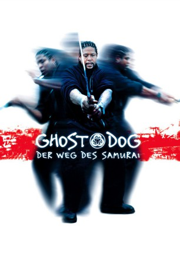
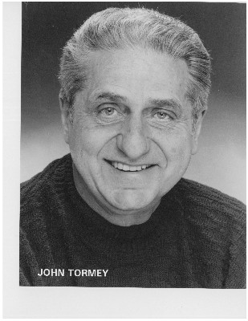
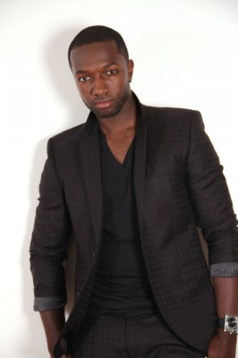
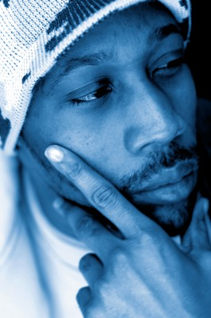
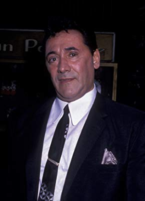

#180 Ghost Dog - Der Weg des Samurai
 
 IMDB-Wertung: 7.5 / 10
IMDB-Wertung: 7.5 / 10  Metascore: 67
Metascore: 67 
Ghost Dog lebt über der Welt - in einer selbstgebauten Hütte neben einem Taubenschlag auf dem Dach eines verlassenen Gebäudes. Er ist ein professioneller Killer und durchwandert, lautlos und ungesehen, die Stadt - wird eins mit der Nacht.\r Sein Leitfaden ist ein alter Verhaltenskodex der japanischen Kriegerkaste - der Samurai. Als sein Leben auf dramatische Weise von einer zerrütteten Mafiafamilie bedroht wird, die gelegentlich seine Dienste in Anspruch nimmt, reagiert er streng nach dem Kodex - dem Weg des Samurai... Jim Jarmusch zeigt in minimalistisch-langsamen Bildern die Welt des Auftragkillers Ghost Dog (Forest Whitaker). Es handelt sich um ein (modern ausgelegtes) Remake des Films 'Le Samourai' (1967) von Jean-Pierre Melville.
Jahr: 1999
Dauer: 116 Minuten
FSK: 16
Land: Frankreich Studio: Arthaus FilmverleihTonspuren: DTS - ,
Untertitel:
Auflösung: 1080p (1920×1080) Größe: 10342 MB
Genre: Action, Krimi, Drama, Thriller
Regisseur:  Jim Jarmusch
Jim Jarmusch
Drehbuch: Jim Jarmusch
Soundtrack: RZA
Darsteller:
 Forest Whitaker als Ghost Dog
Forest Whitaker als Ghost Dog-  John Tormey als Louie
- Cliff Gorman als Sonny Valerio
 Richard Portnow als Handsome Frank
Richard Portnow als Handsome Frank- Tricia Vessey als Louise Vargo
 Henry Silva als Ray Vargo
Henry Silva als Ray Vargo Victor Argo als Vinny
Victor Argo als Vinny- Damon Whitaker als Young Ghost Dog
- Gano Grills als Gangsta in Red
-  Jamie Hector als Gangsta in Red
 Chuck Jeffreys als Mugger
Chuck Jeffreys als Mugger Roberto Lopez als Punk in Alley
Roberto Lopez als Punk in Alley- Jerry Todisco als Punk in Alley
 Isaach De Bankolé als Raymond
Isaach De Bankolé als Raymond- Camille Winbush als Pearline
- Gary Farmer als Nobody
- Jerry Sturiano als Lefty
- Alfred Nittoli als Al
- Tracy Howe als Bear Hunter
 Harry Shearer als Voice of Scratchy , archive footage
Harry Shearer als Voice of Scratchy , archive footage- Vanessa Hollingshead als Female Sheriff
- Sharon Angela als Blonde with Jaguar
-  RZA als Samurai in Camouflage
- Dennis Liu als Chinese Restaurant Owner
- Frank Minucci als Big Angie
- Gene Ruffini als Old Consigliere
-  Frank Adonis als Valerio's Bodyguard
- Kenny Guay als Boy in Window
- Vince Viverito als Johnny Morini
- Touché Cornel als Gangsta in Red
- Yan Ming Shi als Kung-Fu Master
 Vinny Vella als Sammy the Snake
Vinny Vella als Sammy the Snake- Joseph Rigano als Joe Rags
- Salvatore Alagna als Punk in Alley
- Dreddy Kruger als MC in blue
- Timbo King als MC in blue
- Clay Da Raider als MC in blue
- Dead And Stinking als MC in blue
- Deflon Sallahr als MC in blue
- Clebert Ford als Pigeonkeeper
- José Rabelo als Rooftop Boatbuilder
- Tony Rigo als Tony
- Angel Caban als Social Club Landlord
- Luz Valentin als Girl in Silver
- Rene Bluestone als Club Couple
- Jordan Peck als Club Couple
- Jonathan Teague Cook als Bear Hunter
- Paul Diomede als Young Gangster , uncredited
Datei: X:\1999\Ghost Dog - Der Weg des Samurai (1999, FSK16, 1920x1080).mkv seit 14.02.2015
Festplatte: HD 1996-2002
 Es gibt insgesamt 81 Filme in der Gruppe '1999'
Es gibt insgesamt 81 Filme in der Gruppe '1999'